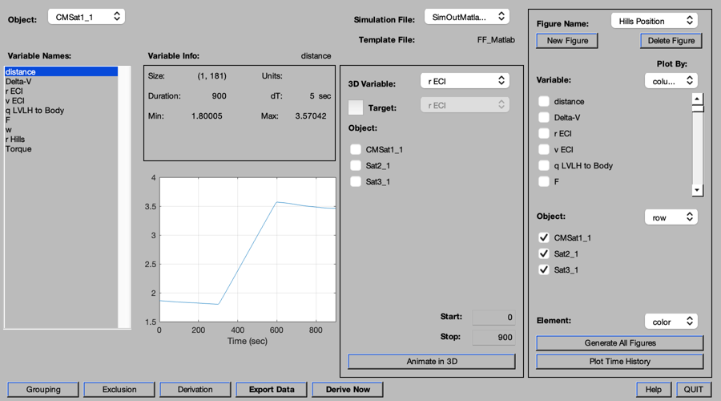
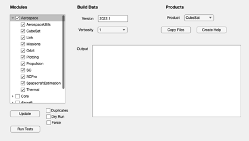
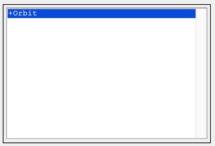
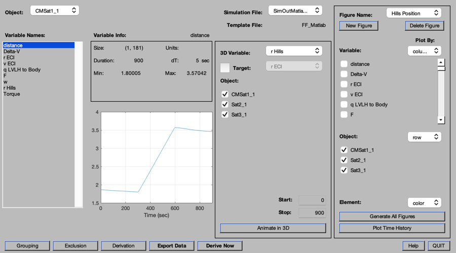
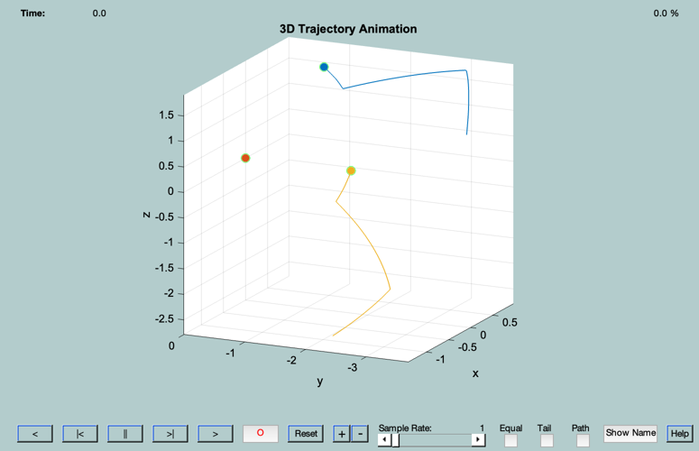
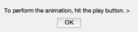

Demonstrate the AnimationGUI
Opens the PlottingTool, loads sim data and a template, and runs an animation. AnimationGUI is not called directly but through the 'animate' action of PlottingTool.
------------------------------------------------------------------------ See also FindDirectory, InformDlg, PlottingTool ------------------------------------------------------------------------
Contents
%-------------------------------------------------------------------------- % Copyright (c) 2000 Princeton Satellite Systems, Inc. % All rights reserved. %-------------------------------------------------------------------------- d = 2;
Simulation file
%---------------- simFile = 'SimOutMatlabRecon.mat'; simPath = fileparts(which(simFile));
Template file
%-------------- templateFile = 'FF_Matlab.mat'; templatePath = FindDirectory(fullfile('Plotting','Templates','')); [h,m] = InformDlg('First, we specify the Simulation file and Template file.','Plotting Tool Demo'); disp(' '); disp( '%%%%%%%%%%%%%%%%%%%%%%%%%%%%%%%%%%%%%%%%%%%%%%%%%%%%%%%%%%%%%%%%%%%%'); disp(['Simulation File: ', fullfile( simPath, simFile )] ); disp(['Template File: ', fullfile( templatePath, templateFile )] ); disp( '%%%%%%%%%%%%%%%%%%%%%%%%%%%%%%%%%%%%%%%%%%%%%%%%%%%%%%%%%%%%%%%%%%%%'); pause(d);
%%%%%%%%%%%%%%%%%%%%%%%%%%%%%%%%%%%%%%%%%%%%%%%%%%%%%%%%%%%%%%%%%%%% Simulation File: /Users/sjthomas/Documents/GitHub/Toolboxes/SourceCode/Aerospace/Plotting/Sim Results/SimOutMatlabRecon.mat Template File: /Users/sjthomas/Documents/GitHub/Toolboxes/SourceCode/Aerospace/Plotting/Templates/FF_Matlab.mat %%%%%%%%%%%%%%%%%%%%%%%%%%%%%%%%%%%%%%%%%%%%%%%%%%%%%%%%%%%%%%%%%%%%
Set up the PlottingTool
%------------------------ PlottingTool; pause(d); set(m,'string','PlottingTool initialized. Now load the Sim Data.'); echo on PlottingTool( 'load sim data', {simFile, simPath} ); echo off figure(h) pause(d); set(m,'string','Sim Data loaded. Now load the template.'); echo on PlottingTool( 'load template', {templateFile, templatePath} ); echo off figure(h) pause(d);
PlottingTool( 'load sim data', {simFile, simPath} );
echo off
PlottingTool( 'load template', {templateFile, templatePath} );
echo off
 Do the animation
%------------------- pause(d); set(m,'string','Choose the "r Hills" variable, and all 3 satellites.'); echo on PlottingTool( 'change animate variable', 'r Hills' ); PlottingTool( 'choose animate object', {1; 1; 1} ); echo off figure(h) pause(d/2); echo on PlottingTool( 'animate' ); echo off pause(.5); close(h); m = msgbox('To perform the animation, hit the play button. >','Plotting Tool Demo'); %-------------------------------------- % $Date$ % $Id: 3994b0f6ea404f3d3dedcfd5612b7dec06ff3c0e $
PlottingTool( 'change animate variable', 'r Hills' );
PlottingTool( 'choose animate object', {1; 1; 1} );
echo off
PlottingTool( 'animate' );
echo off
    